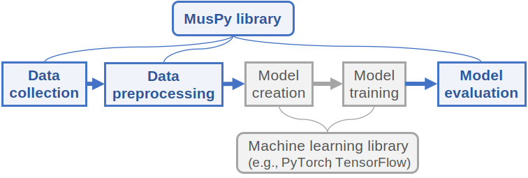

MusPy documentation¶
MusPy is a Python library for symbolic music generation.
Features¶
Dataset management system for commonly used datasets with interfaces to PyTorch and TensorFlow.
Data I/O for common symbolic music formats (e.g., MIDI, MusicXML and ABC) and interfaces to other symbolic music libraries (e.g., music21, mido, pretty_midi and Pypianoroll).
Implementations of common music representations for music generation, including the pitch-based, the event-based, the piano-roll and the note-based representations.
Model evaluation tools for music generation systems, including audio rendering, score and piano-roll visualizations and objective metrics.
Here is an overview of the library.

Why MusPy¶
A music generation pipeline usually consists of several steps—data collection, data preprocessing, model creation, model training and model evaluation.
{kind=link}
While some components need to be customized for each model, others can be shared across systems. For symbolic music generation in particular, a number of datasets, representations and metrics have been proposed in the literature. As a result, an easy-to-use toolkit that implements standard versions of such routines could save a great deal of time and effort and might lead to increased reproducibility.